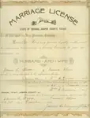
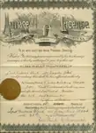

Home / Blunks / 002 Blunk Documents
002 Blunk Documents
Documents related to the Blunk family.
← Return to Blunks

blk002-00001
1892 Marriage License, James Wood and Emma Kline. Marriage License of James Wood and Emma Kline (parents of Evangeline Wood, who married Larkin Blunk). Updated: 11 Jul 2005

blk002-00002
1915 Marriage License, Lark Blunk and Eva Wood. Marriage License of Larkin Blunk and Evangeline Wood. Updated: 11 Jul 2005
2 photos available in this directory.
Copyright © 2005–2026 Thomas Krehbiel. Images are freely distributable for personal use. For more information about these images contact Thomas Krehbiel (tkrehbiel@gmail.com).
Photos were scanned at either 300dpi or 600dpi, depending on the quality of the photograph. Slides were scanned at 1800dpi. Documents were scanned at 100dpi or 150dpi. Photoshop enhancements: most images have had their contrast improved. Some color photos were corrected to restore color balance. Some blurry images were mildly sharpened. Occasionally dust, scratches, and blemishes were removed digitally.